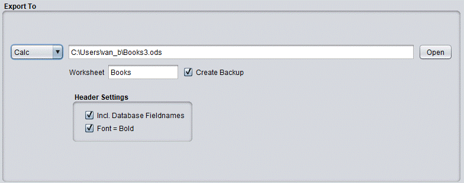

Export To Calc (Open Document Spreadsheet)

Header Settings
Include Headers
Defines whether the first row of the table should contain the database field headers
Font = Bold
When activated it changes the font of the headers to bold
Note
: The "Font=bold" option can only be accessed if you've activated the "Include Headers" option